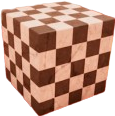
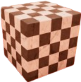
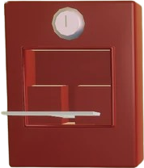
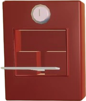

A játék története
A Superliminal kihasználja az optikai illúziókat, és ezek segítségével kell különböző feladatokat megoldani. A játék történetében egy klinikában kezdődik ahol álomterápiás kezelés része leszel. Az elején minden jól megy, de egy idő után elveszel az álomban és nem tudják az orvosok, hogy hol vagy. Megpróbálnak mindent, hogy kihozzanak, de nem sikerül ezért végig kell menned az álmod olyan részein amit már nem irányítanak. A játék végén kiderül, hogy mindez egész végig el volt tervezve és a terápia része volt.
A játék a következő mechanikákat is használja:
Perspektíva kihasználása
Játékelemek klónozása
Protálok és teleportálás
A játékban több nagyobb és kisebb easter egg van
 

 
